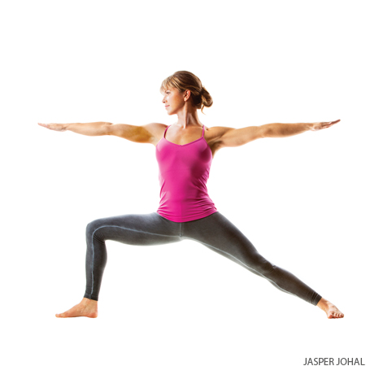

Diarrhea
Headache
High blood pressure
Insomnia
Low blood pressure
Menstruation
Benefits
Stretches the spine, shoulders, and hips
Massages the abdominal organs
Relieves lower backache, neck pain, and sciatica
Helps relieve stress
Improves digestion
Especially good in the second trimester of pregnancy for strengthening the lower back
Warrior II Pose

Pose Information
Sanskrit Name : Virabhadrasana II
Pose Level : 1
Contraindications and Cautions
Diarrhea
High blood pressure
Neck Problems : Don't turn your head to look over the front hand; continue to look straight ahead with both sides of the neck lengthened evenly.
Benefits
Strengthens and stretches the legs and ankles
Stretches the groins, chest and lungs, shoulders
Stimulates abdominal organs
Increases stamina
Relieves backaches, especially through second trimester of pregnancy